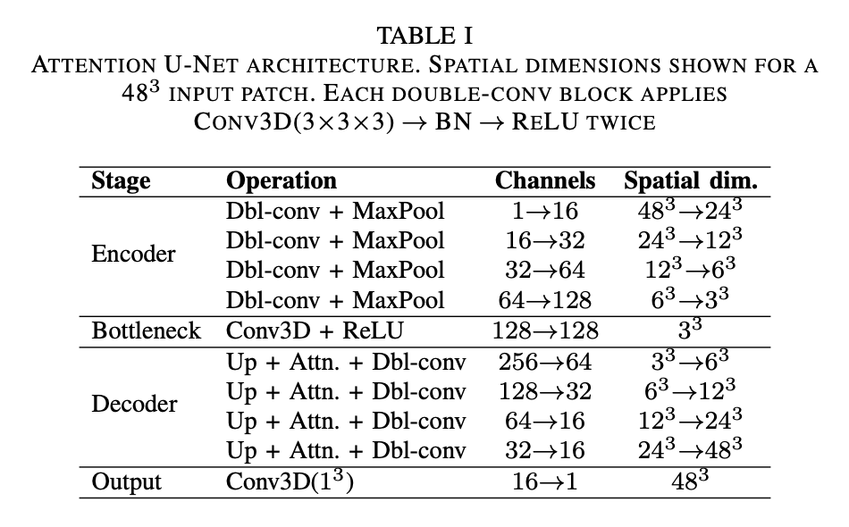
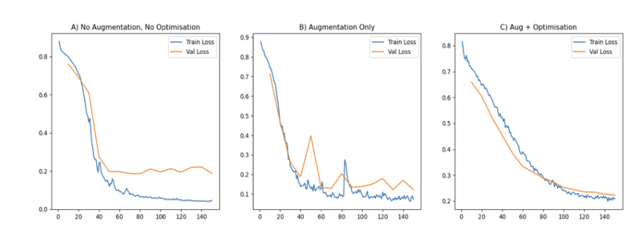
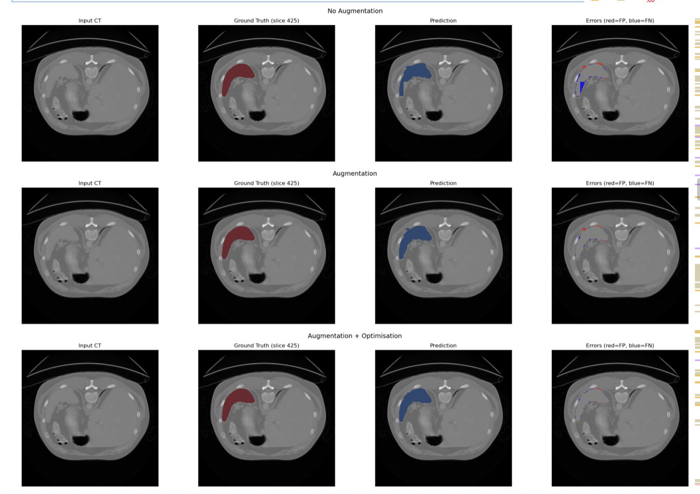
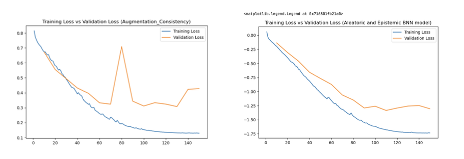
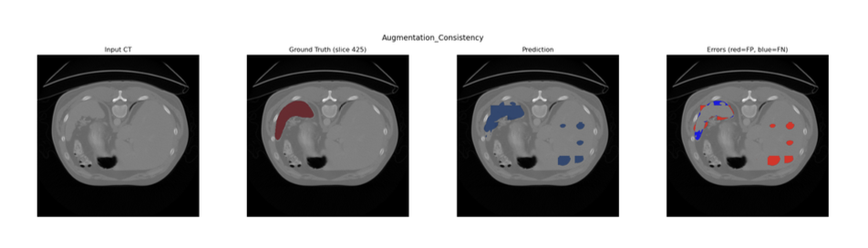
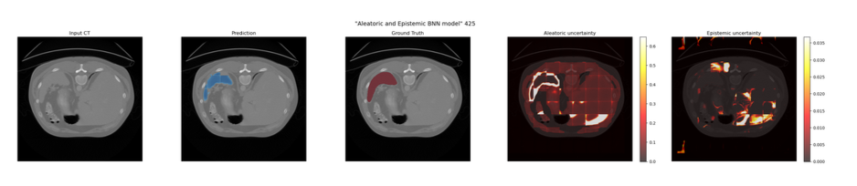

Volumetric Spleen Segmentation via Attention U-Net

Overview
I built an end-to-end 3D pipeline to segment the spleen from CT scans (Medical Segmentation Decathlon) and compared a series of model variants, changing one component at a time so that each improvement could be attributed. I also attempted two extensions: semi-supervised augmentation consistency and a Bayesian network for uncertainty estimation. Both failed, and the reasons why are reported below. Finally, I combined my best model with two groupmates’ independently trained models into an ensemble evaluated on held-out test volumes.
Why uncertainty matters here
In clinical practice, a segmentation that simply outputs a mask is not enough; clinicians need to know where the model is likely to be wrong. That motivated the attempt to separate epistemic uncertainty (what the model does not know) from aleatoric uncertainty (noise in the scan itself). The attempt did not succeed on this small dataset, but the failure mode is instructive (see Model E).
Model variants
- Plain U-Net (benchmark): an architecturally identical 3D U-Net with standard skip connections instead of attention gates, so that the attention gates’ contribution could be isolated.
- Model A – Attention U-Net: attention gates on the skip connections to suppress background anatomy.
- Model B – with data augmentation: random affine and elastic deformations to mimic patient positioning and anatomical variation.
- Model C – with augmentation and optimisation: AdamW optimiser with cosine annealing.
- Model D – augmentation consistency: a semi-supervised loss on unlabelled volumes (described below).
- Model E – Bayesian Attention U-Net: Monte Carlo dropout plus a variance head to estimate epistemic and aleatoric uncertainty.
Pre-processing
The dataset for this project was relatively small (41 CT volumes), so I split it into 35 volumes for training, 3 for validation, and 3 for testing.
As there were inconsistencies in resolution between different views (axial, coronal, and sagittal), I used SimpleITK to first ensure isometricity of all views, preventing the model from learning from distorted anatomy.
Given the small dataset, I was able to preload all volumes into memory, which significantly reduced data-loading bottlenecks and accelerated computation.
The isometric volumes and their corresponding ground-truth labels were divided into patches. To prevent the network from being overwhelmed by empty background voxels, I used a balanced patch-sampling strategy: patches containing spleen tissue were randomly shuffled and paired with background-only patches in a 1:1 ratio, ensuring the model received sufficient foreground signal during training.
Network architecture
The base network for this segmentation task is an Attention U-Net, modelled after the architecture proposed by Oktay et al. (2018). The network processes 3D image patches and can be conceptually divided into three components:

Augmentation consistency model (Model D)
To make use of 20 additional unlabelled volumes, I added an augmentation-consistency loss. The training loop was partitioned into two streams:
- Supervised: labelled patches were passed through the network without additional augmentation.
- Unsupervised: two independent augmentations were applied to the same unlabelled patch. Both augmented views were passed through the current model under gradient isolation; the MSE between the two resulting predictions was computed as the consistency loss and scaled by λ = 0.01 before backpropagation.
Bayesian neural network model (Model E)
Epistemic uncertainty: a 3D dropout layer (p = 0.5) was introduced at the bottleneck. During inference, Monte Carlo dropout was utilised by keeping the model in training mode and executing 20 forward passes; epistemic uncertainty was calculated as the variance of predictions across these passes.
Aleatoric uncertainty: the network was split into a dual-head decoder after the bottleneck. The prediction head yielded the class probability map, while the variance head output a log-variance map (predicting the logarithm ensures positive variance), trained with a loss-attenuation objective following Kendall & Gal (2017).
Results
Dice scores on the 3 validation volumes (mean ± SD). The same volumes were used to select checkpoints, so these figures are optimistic and best read as a comparison between variants rather than as expected performance:
- Plain U-Net (benchmark): 0.78 ± 0.08
- Model A – Attention U-Net: 0.82 ± 0.07
- Model B – with augmentation: 0.88 ± 0.05
- Model C – with augmentation and optimisation: 0.89 ± 0.06
- Model D – augmentation consistency: 0.67 ± 0.03
- Model E – Bayesian network: 0.14 ± 0.03
Ensemble on held-out test volumes. My Model C was combined with two groupmates’ models trained on the same split. This required reconstructing volumes from patches, resampling the other models’ outputs with trilinear interpolation, and correcting an axis-orientation mismatch between our probability maps. On the 3 test volumes, which were not used for any training or selection, the average ensemble reached a Dice of 0.92 ± 0.01 (0.90, 0.94 and 0.92 per volume). Weighting the models by validation Dice gave a negligible further gain (0.92), as expected because the weights were nearly uniform. Remaining errors sat almost entirely on the organ boundary.

What failed, and why
Augmentation consistency (Model D) reduced Dice from 0.89 to 0.67. With only 20 unlabelled volumes and a small labelled set, the consistency objective appears to have pulled the model towards predictions that were consistent but not accurate.
The Bayesian network (Model E) collapsed. Its Dice of 0.14 shows it never learned the anatomy; its aleatoric map traced the 48×48×48 patch boundaries rather than tissue, and its epistemic uncertainty stayed near zero. In other words, the model was confidently wrong, which is the worst combination for a system meant to flag its own unreliability. A safer design would apply Monte Carlo dropout after training to the well-performing Model C, rather than training the uncertainty heads jointly from scratch on so little data.
Figures
Models A, B, and C


Models D and E


